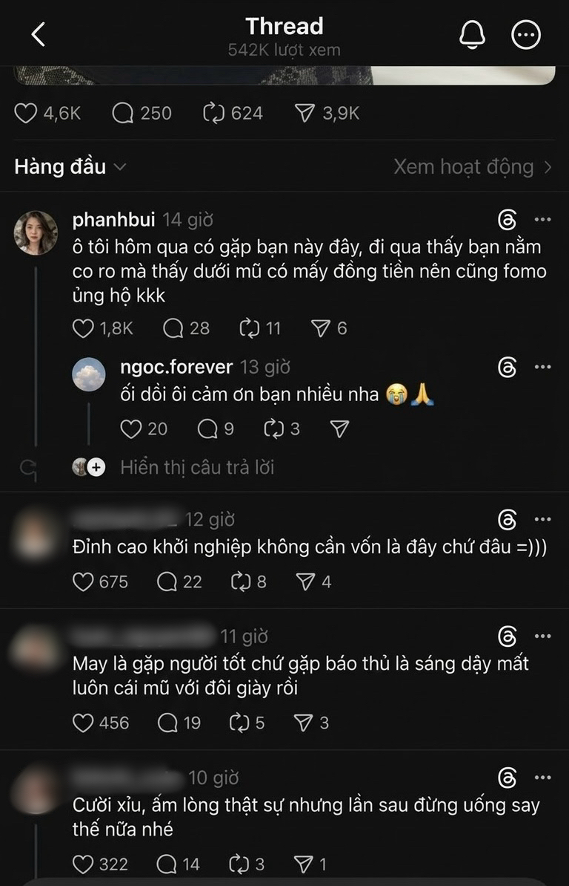
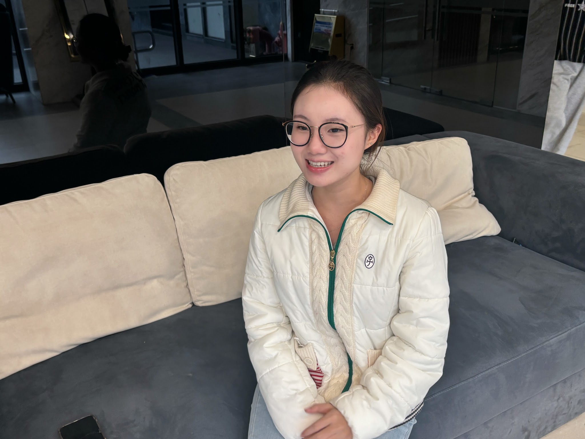

Mới đây, vào ngày 12/11, tài khoản mạng xã hội Threads có tên ngoc.forever của Ngọc Mãi (Hải Phòng) đã chia sẻ hình ảnh một chiếc mũ có nhiều đồng tiền lẻ bên trong cùng chiếc áo khoác cũ. Bài đăng mang tiêu đề “Hoá ra trên đời này vẫn còn nhiều đáng yêu đến thế!” nhanh chóng thu hút được sự quan tâm của cộng đồng mạng với hơn 500.000 lượt xem và hàng chục nghìn lượt tương tác.

Trong bài viết, Ngọc Mãi kể rằng, tối 11/11, sau khi tham dự sinh nhật bạn và uống say, cô quyết định đi bộ về nhà vì khoảng cách không xa. Tuy nhiên, khi đi qua khu vực công viên Ulus, cô bất ngờ ngã xuống một chiếc ghế đá và ngủ thiếp đi.
Đến rạng sáng ngày 12/11, khi tỉnh dậy, Ngọc Mãi phát hiện trong chiếc mũ không may rơi xuống đất của mình xuất hiện nhiều đồng tiền lẻ, đồng thời trên người còn có một chiếc áo khoác ấm. Bất ngờ trước những gì xảy ra, cô quyết định chia sẻ câu chuyện ấm áp lên Threads.

Những hành động tử tế được ghi lại qua camera
Theo hình ảnh trích xuất từ camera an ninh tại khu vực, sự việc được ghi nhận trong khoảng thời gian từ 22h57 đến 23h22 ngày 11/11. Ngọc Mãi xuất hiện tại khu vực ghế đá, sau đó vô tình ngã xuống và nằm co người trên ghế. Trong lúc này, chiếc mũ trên đầu cô rơi xuống đất, phần lòng mũ ngửa lên trên.
Một người đi bộ ngang qua nhận thấy cô gái nằm một mình trên ghế đã dừng lại, tiến đến gần và dùng áo khoác đắp lên người cô. Sau đó, một số người khác cũng ghé lại, nhẹ nhàng đặt tiền vào trong chiếc mũ của Ngọc Mãi. Những hình ảnh này phần nào lý giải cho số tiền lẻ trong chiếc mũ và chiếc áo khoác mà cô phát hiện khi tỉnh dậy vào hôm sau.
“Trông cô ấy tội quá!”
Dưới bài đăng, một tài khoản Threads mang tên phanhbui đã gây chú ý khi để lại bình luận cho biết mình đã trực tiếp chứng kiến sự việc: “ô tôi hôm qua có gặp bạn này đây, đi qua thấy bạn nằm co ro mà thấy dưới mũ có mấy đồng tiền nên cũng fomo ủng hộ kkk”.

Liên hệ với chị Phanh Bui - chủ nhân của bình luận trên và cũng là người trực tiếp để lại tiền trong chiếc mũ của Ngọc Mãi, chị cho biết bản thân dừng lại vì thấy cô gái nằm một mình trên ghế đá giữa thời tiết lạnh. Chia sẻ về hành động của mình, chị Phanh Bui cho biết:
“Trời thì vừa lạnh, vừa tối mà cô gái mặc mỗi cái áo mỏng tang nằm trên ghế, trông cô ấy tội quá! Đúng lúc tôi vừa đi làm về, thấy ở dưới mũ có vài đồng tiền lẻ, tưởng cô ấy cũng là người lang thang nên bỏ tiền vào giúp đỡ.”

Sự tử tế từ những người xa lạ
Chia sẻ về sự việc, Ngọc Mãi cho biết cô khá bất ngờ và cảm thấy đôi chút hối hận khi để một tình huống ngoài ý muốn dẫn đến sự hiểu lầm như vậy. Tuy nhiên, điều khiến cô cảm thấy ấm lòng và cảm động là sự quan tâm của những người xa lạ trong những ngày Hà Nội bắt đầu trở lạnh.
Ngọc Mãi còn tâm sự thêm, nếu người nằm trên ghế đá hôm ấy thực sự là một người không có nơi ở ổn định, những hành động nhỏ như vậy có thể đã giúp họ có thêm một bữa ăn ấm áp. Câu chuyện vì thế không chỉ dừng lại ở một tình huống hài hước, mà còn cho chúng ta thêm niềm tin về những hành động tử tế, bình dị vẫn luôn còn hiện diện giữa cuộc sống hàng ngày.
Khép lại cuộc trò chuyện, cô không quên nhắn nhủ mọi người không nên làm theo hành động lạm dụng đồ uống có cồn của mình. Dù câu chuyện mang đến nhiều cảm xúc tích cực, việc uống say rồi tự ý đi lại một mình ở nơi công cộng vẫn tiềm ẩn những rủi ro về an toàn cá nhân.
Một hành động nhỏ có thể tạo nên sự khác biệt
Không phải lúc nào sự giúp đỡ cũng cần bắt đầu từ những điều lớn lao. Đôi khi, chỉ một chiếc áo khoác được đặt lên vai người đang co ro trong đêm lạnh, một chút tiền lẻ ủng hộ hay đơn giản là việc dừng chân hỏi thăm cũng có thể mang lại sự ấm áp cho một người xa lạ. Thế nhưng, khi bắt gặp ai đó có dấu hiệu say xỉn, mệt mỏi hoặc gặp khó khăn nơi công cộng, chúng ta nên giúp đỡ như thế nào để vừa thể hiện sự quan tâm, vừa đảm bảo an toàn cho họ và chính mình?
Learn more → Giúp đỡ người khác là tốt nhưng bạn nhất định phải biết 4 quy tắc ẩn này
Bình luận & Thảo luận (0)